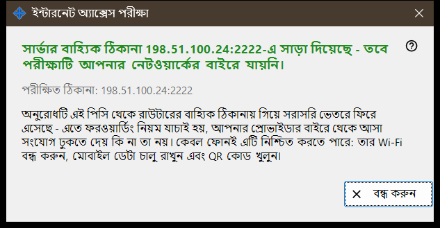
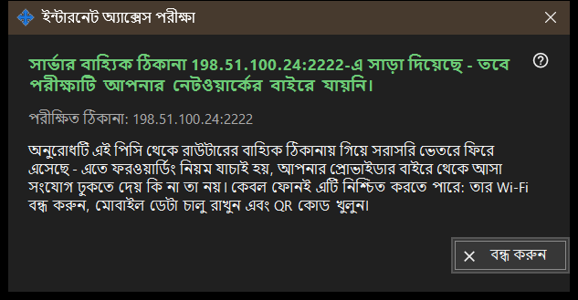

ইন্টারনেট অ্যাক্সেস পরীক্ষা
এটি কীসের জন্য
এই পিসি থেকে যাচাই করে শেয়ার করা ঠিকানা SFTP সার্ভারের মতো সাড়া দেয় কি না। এটি মূল উইন্ডোর ইন্টারনেট অ্যাক্সেস পরীক্ষা করুন বোতাম থেকে খোলে এবং যে ঠিকানা পরীক্ষা করছে, একটি রায় ও একটি ব্যাখ্যা দেখায়।


এই ক্রমে
- উইন্ডো খুলুন; এটি ঠিকানা দেখায় এবং সঙ্গে সঙ্গে যাচাই শুরু করে।
- শিরোনাম আসার জন্য অপেক্ষা করুন।
- তার নিচের বিবরণের লাইন পড়ুন।
- ফল চূড়ান্ত না হলে Wi-Fi বন্ধ ও মোবাইল ডেটা চালু রেখে ফোন থেকে যাচাই আবার করুন।
- বন্ধ করুন চাপুন।
উপাদানসমূহ
পরীক্ষিত ঠিকানা
পরীক্ষিত ঠিকানা: .. হোস্ট ও পোর্ট দেখায়। যাচাই চলার সময় উইন্ডো বলে: পরীক্ষা .. । কোনো ঠিকানা জানা না থাকলে ফল হয়: এখনও কোনো ইন্টারনেট ঠিকানা নেই। ভুল গঠনের ঠিকানা দেয়: ঠিকানা অবৈধ।
রায়
SFTP সার্ভার উপলব্ধ - পোর্ট একটি SFTP ব্যানারসহ সাড়া দিয়েছে। পোর্ট খোলা, কিন্তু SFTP সাড়া দেয়নি - পোর্টে কিছু শুনছে, কিন্তু সেটি আমাদের প্রোগ্রাম নয়; দেখুন রাউটারের নিয়ম এই পিসি এবং শেয়ারের পোর্টে যাচ্ছে কি না। উত্তরের আগে সংযোগ বন্ধ হয়ে যাওয়া সংযোগের সীমা বোঝাতে পারে; আবার চেষ্টা করুন। এই পিসি থেকে কোনো উত্তর না এলে বোঝায় রাউটার ভিতর থেকে নিজের ঠিকানা আটকাতে পারে।
ফল কেন চূড়ান্ত নাও হতে পারে
অনুরোধটি এই পিসি থেকে রাউটারের বাহ্যিক ঠিকানায় যায় এবং সরাসরি ভিতরে ফিরে আসে, তাই এটি ফরওয়ার্ডিং নিয়ম পরখ করে, প্রদানকারী বাইরে থেকে আসা সংযোগ ঢুকতে দেয় কি না তা নয়। এটি মীমাংসা করতে পারে কেবল ফোন: তার Wi-Fi বন্ধ করুন, মোবাইল ডেটা চালু রাখুন এবং QR কোড খুলুন। তবুও সংযোগ না হলে কীভাবে ইন্টারনেট অ্যাক্সেস সেট করবেন বোতাম দিয়ে পোর্ট ফরওয়ার্ডিং ঠিক করুন।
ম্যানেজার সেটিংস · SFTP শেয়ারিং সেটিংস · এক্সচেঞ্জ সার্ভার সেটিংস